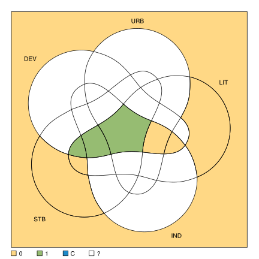
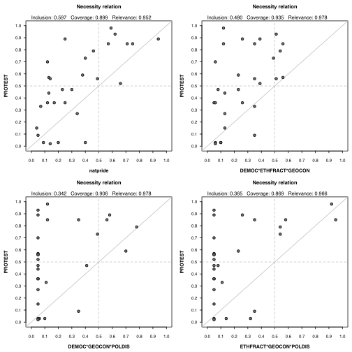

eqmcc(data, outcome = "", conditions = "", relation = "suf", n.cut = 1, incl.cut = 1, explain = "1", include = "", row.dom = FALSE, all.sol = FALSE, omit = NULL, dir.exp = "", details = FALSE, show.cases = FALSE, inf.test = "", use.tilde = FALSE, use.letters = FALSE, ...)
outcome, either
"suf" or "sufnec"."binom") and the critical significance level.
It can be either a vector of length 2, or a single string containing both,
separated by a comma.This function performs the QCA minimization of some causal conditions, with respect to an outcome. It is called “eqmcc” from the (e)nhanced Quine-McCluskey, a different algorithm which returns the same, exact solutions.
The argument data can be either a truth table object (created with the
function truthTable()) or a data frame containing calibrated columns.
Calibration can be either crisp, with 2 or more values starting from 0, or fuzzy with continous scores from 0 to 1. Raw data containing relative frequencies can also be continous between 0 and 1, but these are not calibrated, fuzzy data.
Some columns can contain the placeholder "-" indicating a
“don't care”, which is used to indicate the temporal order between other
columns in tQCA. These special columns are not causal conditions, hence no parameters
of fit will be calculated for them.
The argument outcome specifies the column name to be explained.
If the outcome is a multivalue column, it can be specified in curly bracket notation,
indicating the value to be explained (the others being automatically converted to
zero).
The outcome can be negated using a tilde operator ~X. The logical
argument neg.out is now deprecated, but still backwards compatible.
Replaced by the tilde in front of the outcome name, it controls whether
outcome is to be explained or its negation.
If the outcome column is multi-value, the argument outcome should use
the standard curly-bracket notation X{value}. Multiple values are
allowed, separated by a comma (for example X{1,2}). Negation of the
outcome can also be performed using the tilde ~ operator, for example
~X{1,2}, which is interpreted as: "all values in X except 1 and 2"
and it becomes the new outcome to be explained.
Using both neg.out = TRUE and a tilde ~ in the outcome
name don't cancel each other out, either one (or even both) signaling if the
outcome should be negated.
This function supports multiple outcomes, in which case all of them should also be
specified in the argument conditions.
The argument conditions specifies the causal conditions' names among
the other columns in the data. For backwards compatibility, this argument also
accepts a character vector of condition variables' names. When this argument is not
specified, all other columns except for the outcome are taken as causal conditions
(and in case there are multiple outcomes, all columns are considered causal
conditions).
A good practice advice is to specify both outcome and
conditions as upper case letters. It is possible, in a next version,
to negate outcomes using lower case letters, situation in which it really does
matter how the outcome and/or conditions are specified.
The argument relation is used to identify solutions which are
sufficient for the outcome. When using relation = "suf", the function
will return all solutions which are sufficient for the outcome (whether necessary
or not). If using relation = "sufnec", only those solutions which are
both sufficient and necessary will be returned.
The argument n.cut specifies the frequency threshold under which a
truth table row is coded as a remainder, irrespective of its inclusion score.
The argument incl.cut replaces the (deprecated, but still backwards
compatible) former arguments incl.cut1 and incl.cut0.
Most of the analyses use the inclusion cutoff for the presence of the output
(code "1"). When users need both inclusion cutoffs (see below),
incl.cut can be specified as a vector of length 2, in the form:
c(ic1, ic0) where:
ic1 |
is the inclusion cutoff for the presence of the output, |
a minimum sufficiency inclusion score above which the output
value is coded with "1". |
|
ic0 |
is the inclusion cutoff for the absence of the output, |
a maximum sufficiency inclusion score below which the output
value is coded with "0". |
If not specifically declared, the argument ic0 is automatically set
equal to ic1, but otherwise ic0 should always be lower
than ic1.
Using these two cutoffs, the observed combinations are coded with:
"1" |
if they have an inclusion score above ic1 |
"C" |
if they have an inclusion score below ic1 and
above ic0 (contradiction) |
"0" |
if they have an inclusion score below ic0 |
The argument explain specifies the output values corresponding to the
truth table rows which enter in the minimization process.
Such values can be "1", "C", "0",
"1, C" and "0, C", but not "1, 0" and
"1, 0, C". Note that for "0", "C" and
"0, C", configurations will be reduced but no solution details
printed.
The argument include specifies which other truth table rows are
included in the minimization process. Most often, the remainders are included but
any value accepted in the argument explain is also accepted in the
argument include.
The argument row.dom is used to further eliminate redundant prime
implicants when solving the PI chart, applying the principle of row dominance: if
a prime implicant X covers the same configurations as another prime
implicant Y and in the same time covers other configurations which
Y does not cover, then Y is redundant and eliminated.
When solving the PI chart, the algorithm finds the minimal number of prime implicants
needed (k) to cover all configurations, then finds all possible pairs
of k prime implicants which do cover those configurations. The argument
all.sol presents all possible combinations of n prime
implicants which solves the PI chart, where n >= k.
all.sol deactivates the argument row.dom, thus inflating
the number of possible solutions. Depending on the complexity of the PI chart, sometimes
it is not even possible to get all possible solutions.
The argument omit is used to exclude truth table rows from the minimization
process, from the positive configurations and/or from the remainders. It can be specified
as a vector of truth table line numbers, or as a matrix of causal combinations.
The argument dir.exp is used to specify directional expectations, as
described by Ragin (2003). They can be specified as a single string, with values
separated by commas. For multi-value directional expectations, they are specified
together, separated by semicolons. The total length of the directional expectations
must match the number of causal conditions specified in the analysis, using a dash
"-" if there are no particular expectations for a specific causal
condition.
Activating the details argument has the effect of printing parameters
of fit for each prime implicant and each overall solution, the essential prime
implicants being listed in the top part of the table. It also prints the truth table,
in case the argument data has been provided as a data frame instead
of a truth table object.
When argument show.cases is set to TRUE, the case names
will be printed at their corresponding row in the truth table, and also at their
corresponding prime implicants in the table containing the parameters of fit. Cases
separated by commas belong to the same truth table row, while groups separated by
semicolons belong to different truth table rows.
The argument inf.test combines the inclusion score with a statistical
inference test, in order to assign values in the output column from the truth table
(assuming the argument data is not already a truth table object).
For the moment, it is only the binomial test, which needs crisp data (it doesn't work
with fuzzy sets). For a given (specified) critical significance level, the output for
a truth table row will be coded as:
"1" |
if the true inclusion score is significanly higher than
ic1, |
"C" |
contradiction, if the true inclusion score is not significantly
higher than ic1 |
but significantly higher than ic0, |
|
"0" |
if the true inclusion score is not significantly higher than
ic0. |
It should be noted that statistical tests perform well only when the number of cases is
large, otherwise they are usually not significant. For a low number of cases, depending
on the inclusion cutoff value(s), it will be harder to code a value of "1"
in the output, and also harder to obtain contradictions if the true inclusion is not
signficantly higher than ic0.
The argument use.letters controls using the original names of the causal
conditions, or replace them by single letters in alphabetical order. If the
causal conditions are already named with single letters, the original letters
will be used.
"qca" when using a single outcomes, or class "mqca"
when using multiple outcomes. These objects are lists having the following components:
| tt | The truth table object. | |
| excluded | The line number(s) of the negative configuration(s). | |
| initials | The initial positive configuration(s). | |
| PIs | The prime implicant(s). | |
| PIchart | A list containing the PI chart(s). | |
| solution | A list of solution(s). | |
| essential | A list of essential PI(s). | |
| pims | A list of PI membership scores. | |
| SA | A list of simplifying assumptions. | |
| i.sol | A list of components specific to intermediate solution(s), each having a prime implicants | |
| chart, prime implicant membership scores, (non-simplifying) easy counterfactuals and | ||
| difficult counterfactuals. |
Cebotari, V.; Vink, M.P. (2013) “A Configurational Analysis of Ethnic Protest in Europe”. International Journal of Comparative Sociology vol.54, no.4, pp.298-324.
Cebotari, V.; Vink, M.P. (2015) “Replication Data for: A configurational analysis of ethnic protest in Europe”, DOI: http://dx.doi.org/10.7910/DVN/PT2IB9, Harvard Dataverse, V2
Cronqvist, L.; Berg-Schlosser, D. (2009) “Multi-Value QCA (mvQCA)”, in Rihoux, B.; Ragin, C. (eds.) Configurational Comparative Methods. Qualitative Comparative Analysis (QCA) and Related Techniques, SAGE.
Dusa, A.; Thiem, A. (2015) “Enhancing the Minimization of Boolean and Multivalue Output Functions With eQMC” Journal of Mathematical Sociology vol.39, no.2, pp.92-108.
Ragin, C. (2003) Recent Advances in Fuzzy-Set Methods and Their Application to Policy Questions. WP 2003-9, COMPASSS. URL: http://www.compasss.org/wpseries/Ragin2003a.pdf.
Ragin, C. (2009) “Qualitative Comparative Analysis Using Fuzzy-Sets (fsQCA)”, in Rihoux, B.; Ragin, C. (eds.) Configurational Comparative Methods. Qualitative Comparative Analysis (QCA) and Related Techniques, SAGE.
Ragin, C.C.; Strand, S.I. (2008) “Using Qualitative Comparative Analysis to Study Causal Order: Comment on Caren and Panofsky (2005).” Sociological Methods & Research vol.36, no.4, pp.431-441.
Rihoux, B.; De Meur, G. (2009) “Crisp Sets Qualitative Comparative Analysis (mvQCA)”, in Rihoux, B.; Ragin, C. (eds.) Configurational Comparative Methods. Qualitative Comparative Analysis (QCA) and Related Techniques, SAGE.
# ----- # Lipset binary crisp data data(LC) # the associated truth table ttLC <- truthTable(LC, "SURV", sort.by = "incl, n") ttLCOUT: outcome value n: number of cases in configuration incl: sufficiency inclusion score DEV URB LIT IND STB OUT n incl PRI 32 1 1 1 1 1 1 4 1.000 1.000 22 1 0 1 0 1 1 2 1.000 1.000 24 1 0 1 1 1 1 2 1.000 1.000 1 0 0 0 0 0 0 3 0.000 0.000 2 0 0 0 0 1 0 2 0.000 0.000 5 0 0 1 0 0 0 2 0.000 0.000 6 0 0 1 0 1 0 1 0.000 0.000 23 1 0 1 1 0 0 1 0.000 0.000 31 1 1 1 1 0 0 1 0.000 0.000# conservative solution (Rihoux & De Meur 2009, p.57) cLC <- eqmcc(ttLC) cLCM1: DEV*LIT*IND*STB + DEV*urb*LIT*STB <=> SURV# view the Venn diagram for the associated truth table library(venn) venn(cLC)
# add details and case names eqmcc(ttLC, details = TRUE, show.cases = TRUE)n OUT = 1/0/C: 8/10/0 Total : 18 Number of multiple-covered cases: 2 M1: DEV*LIT*IND*STB + DEV*urb*LIT*STB <=> SURV incl PRI cov.r cov.u cases ------------------------------------------------------------------ 1 DEV*LIT*IND*STB 1.000 1.000 0.750 0.500 FR,SE; BE,CZ,NL,UK 2 DEV*urb*LIT*STB 1.000 1.000 0.500 0.250 FI,IE; FR,SE ------------------------------------------------------------------ M1 1.000 1.000 1.000# negating the outcome ttLCn <- truthTable(LC, "~SURV", sort.by = "incl, n") eqmcc(ttLCn)M1: dev*urb*ind + DEV*LIT*IND*stb <=> surv# using a tilde instead of upper/lower case names eqmcc(ttLCn, use.tilde = TRUE)M1: ~DEV*~URB*~IND + DEV*LIT*IND*~STB <=> ~SURV# parsimonious solution, positive output pLC <- eqmcc(ttLC, include = "?", details = TRUE, show.cases = TRUE) pLCn OUT = 1/0/C: 8/10/0 Total : 18 Number of multiple-covered cases: 0 M1: DEV*STB <=> SURV incl PRI cov.r cov.u cases ----------------------------------------------------------------- 1 DEV*STB 1.000 1.000 1.000 - FI,IE; FR,SE; BE,CZ,NL,UK ----------------------------------------------------------------- M1 1.000 1.000 1.000# the associated simplifying assumptions pLC$SA$M1 DEV URB LIT IND STB 18 1 0 0 0 1 20 1 0 0 1 1 26 1 1 0 0 1 28 1 1 0 1 1 30 1 1 1 0 1# parsimonious solution, negative output pLCn <- eqmcc(ttLCn, include = "?", details = TRUE, show.cases = TRUE) pLCnn OUT = 1/0/C: 10/8/0 Total : 18 Number of multiple-covered cases: 5 M1: dev + stb <=> surv incl PRI cov.r cov.u cases -------------------------------------------------------------- 1 dev 1.000 1.000 0.800 0.300 GR,PT,ES; IT,RO; HU,PL; EE 2 stb 1.000 1.000 0.700 0.200 GR,PT,ES; HU,PL; AU; DE -------------------------------------------------------------- M1 1.000 1.000 1.000# ----- # Lipset multi-value crisp data (Cronqvist & Berg-Schlosser 2009, p.80) data(LM) # truth table ttLM <- truthTable(LM, "SURV", conditions = "DEV, URB, LIT, IND", sort.by = "incl", show.cases = TRUE) # conservative solution, positive output eqmcc(ttLM, details = TRUE, show.cases = TRUE)n OUT = 1/0/C: 7/11/0 Total : 18 Number of multiple-covered cases: 0 M1: DEV{2}*LIT{1}*IND{1} + DEV{1}*URB{0}*LIT{1}*IND{0} => SURV incl PRI cov.r cov.u cases --------------------------------------------------------------------------- 1 DEV{2}*LIT{1}*IND{1} 1.000 1.000 0.625 0.625 FR,SE; BE,NL,UK 2 DEV{1}*URB{0}*LIT{1}*IND{0} 1.000 1.000 0.250 0.250 FI,IE --------------------------------------------------------------------------- M1 1.000 1.000 0.875# parsimonious solution, positive output eqmcc(ttLM, include = "?", details = TRUE, show.cases = TRUE)n OUT = 1/0/C: 7/11/0 Total : 18 Number of multiple-covered cases: 0 M1: DEV{2} + DEV{1}*IND{0} => SURV incl PRI cov.r cov.u cases ------------------------------------------------------------- 1 DEV{2} 1.000 1.000 0.625 0.625 FR,SE; BE,NL,UK 2 DEV{1}*IND{0} 1.000 1.000 0.250 0.250 FI,IE ------------------------------------------------------------- M1 1.000 1.000 0.875# negate the outcome ttLMn <- truthTable(LM, "~SURV", conditions = "DEV, URB, LIT, IND", sort.by = "incl", show.cases = TRUE) # conservative solution, negative output eqmcc(ttLMn, details = TRUE, show.cases = TRUE)n OUT = 1/0/C: 9/9/0 Total : 18 Number of multiple-covered cases: 0 M1: DEV{0}*URB{0}*IND{0} + DEV{1}*URB{0}*LIT{1}*IND{1} => surv incl PRI cov.r cov.u cases ------------------------------------------------------------------------------------ 1 DEV{0}*URB{0}*IND{0} 1.000 1.000 0.800 0.800 GR,IT,PT,RO,ES; EE,HU,PL 2 DEV{1}*URB{0}*LIT{1}*IND{1} 1.000 1.000 0.100 0.100 AU ------------------------------------------------------------------------------------ M1 1.000 1.000 0.900# parsimonious solution, positive output eqmcc(ttLMn, include = "?", details = TRUE, show.cases = TRUE)n OUT = 1/0/C: 9/9/0 Total : 18 Number of multiple-covered cases: 0 M1: DEV{0} + DEV{1}*URB{0}*IND{1} => surv incl PRI cov.r cov.u cases ----------------------------------------------------------------------------- 1 DEV{0} 1.000 1.000 0.800 0.800 GR,IT,PT,RO,ES; EE,HU,PL 2 DEV{1}*URB{0}*IND{1} 1.000 1.000 0.100 0.100 AU ----------------------------------------------------------------------------- M1 1.000 1.000 0.900# ----- # Lipset fuzzy sets data (Ragin 2009, p.112) data(LF) # truth table using a very low inclusion cutoff ttLF <- truthTable(LF, "SURV", incl.cut = 0.7, show.cases = TRUE, sort.by="incl") # conservative solution eqmcc(ttLF, details = TRUE, show.cases = TRUE)n OUT = 1/0/C: 8/10/0 Total : 18 Number of multiple-covered cases: 2 M1: DEV*LIT*IND*STB + DEV*urb*LIT*STB <=> SURV incl PRI cov.r cov.u cases ------------------------------------------------------------------ 1 DEV*LIT*IND*STB 0.843 0.821 0.622 0.385 FR,SE; BE,CZ,NL,UK 2 DEV*urb*LIT*STB 0.809 0.761 0.433 0.196 FI,IE; FR,SE ------------------------------------------------------------------ M1 0.871 0.851 0.818# parsimonious solution eqmcc(ttLF, include = "?", details = TRUE, show.cases = TRUE)n OUT = 1/0/C: 8/10/0 Total : 18 Number of multiple-covered cases: 0 M1: DEV*STB <=> SURV incl PRI cov.r cov.u cases ----------------------------------------------------------------- 1 DEV*STB 0.869 0.848 0.824 - FI,IE; FR,SE; BE,CZ,NL,UK ----------------------------------------------------------------- M1 0.869 0.848 0.824# intermediate solution using directional expectations iLF <- eqmcc(ttLF, include = "?", details = TRUE, show.cases = TRUE, dir.exp = "1,1,1,1,1") # ----- # Cebotari & Vink (2013, 2015) data(CVF) ttCVF <- truthTable(CVF, outcome = "PROTEST", incl.cut = 0.8, show.cases = TRUE, sort.by = "incl, n") pCVF <- eqmcc(ttCVF, include = "?", details = TRUE, show.cases = TRUE) pCVFn OUT = 1/0/C: 13/16/0 Total : 29 Number of multiple-covered cases: 5 M1: natpride + DEMOC*GEOCON*POLDIS + (DEMOC*ETHFRACT*GEOCON + democ*ETHFRACT*POLDIS) <=> PROTEST M2: natpride + DEMOC*GEOCON*POLDIS + (DEMOC*ETHFRACT*GEOCON + ETHFRACT*GEOCON*POLDIS) <=> PROTEST M3: natpride + DEMOC*GEOCON*POLDIS + (democ*ETHFRACT*POLDIS + DEMOC*ETHFRACT*poldis) <=> PROTEST M4: natpride + DEMOC*GEOCON*POLDIS + (DEMOC*ETHFRACT*poldis + ETHFRACT*GEOCON*POLDIS) <=> PROTEST --------------------------------- incl PRI cov.r cov.u (M1) (M2) (M3) (M4) --------------------------------------------------------------------------------- 1 natpride 0.899 0.807 0.597 0.121 0.132 0.136 0.122 0.126 2 DEMOC*GEOCON*POLDIS 0.906 0.805 0.342 0.065 0.065 0.065 0.070 0.065 --------------------------------------------------------------------------------- 3 DEMOC*ETHFRACT*GEOCON 0.935 0.826 0.480 0.000 0.085 0.085 4 democ*ETHFRACT*POLDIS 0.842 0.718 0.299 0.000 0.040 0.040 5 DEMOC*ETHFRACT*poldis 0.932 0.773 0.417 0.000 0.085 0.085 6 ETHFRACT*GEOCON*POLDIS 0.869 0.786 0.365 0.005 0.045 0.045 --------------------------------------------------------------------------------- M1 0.877 0.777 0.805 M2 0.879 0.782 0.810 M3 0.877 0.777 0.805 M4 0.879 0.782 0.810 cases -------------------------------- 1 natpride CrimRussiansUkr,RussiansUkraine; HungariansYugo,KosovoAlbanians; RussiansLatvia; BasquesSpain; AlbaniansFYROM 2 DEMOC*GEOCON*POLDIS HungariansRom,CatholicsNIreland; AlbaniansFYROM; RussiansEstonia -------------------------------- 3 DEMOC*ETHFRACT*GEOCON BasquesSpain; SerbsFYROM,CatalansSpain; AlbaniansFYROM; RussiansEstonia 4 democ*ETHFRACT*POLDIS HungariansYugo,KosovoAlbanians; GagauzMoldova 5 DEMOC*ETHFRACT*poldis BasquesSpain; SerbsFYROM,CatalansSpain 6 ETHFRACT*GEOCON*POLDIS HungariansYugo,KosovoAlbanians; GagauzMoldova; AlbaniansFYROM; RussiansEstonia --------------------------------# inspect the PI chart pCVF$PIchart5 15 16 24 27 29 30 31 32 natpride x x - - x x - x - DEMOC*ETHFRACT*GEOCON - - - - - x x x x democ*ETHFRACT*POLDIS - x x - - - - - - DEMOC*ETHFRACT*poldis - - - - - x x - - DEMOC*GEOCON*POLDIS - - - x - - - x x ETHFRACT*GEOCON*POLDIS - x x - - - - x x# DEMOC*ETHFRACT*poldis is dominated by DEMOC*ETHFRACT*GEOCON # using row dominance to solve the PI chart pCVFrd <- eqmcc(ttCVF, include = "?", row.dom = TRUE, details = TRUE, show.cases = TRUE) # plot the prime implicants on the outcome pims <- pCVFrd$pims par(mfrow = c(2, 2)) for(i in 1:4) { XYplot(pims[, i], CVF$PROTEST, cex.axis = 0.6) }
# ----- # temporal QCA (Ragin & Strand 2008) data(RS) eqmcc(RS, "REC", details = TRUE, show.cases = TRUE)OUT: outcome value n: number of cases in configuration incl: sufficiency inclusion score P E A S EBA OUT n incl PRI cases 3 0 0 0 0 - 0 3 0.000 0.000 15,16,17 15 0 1 0 0 - 0 1 0.000 0.000 14 22 0 1 1 1 0 1 1 1.000 1.000 13 27 1 0 0 0 - 0 1 0.000 0.000 12 30 1 0 0 1 - 0 3 0.000 0.000 9,10,11 36 1 0 1 1 - 0 2 0.000 0.000 7,8 42 1 1 0 1 - 1 1 1.000 1.000 6 44 1 1 1 0 1 1 2 1.000 1.000 4,5 46 1 1 1 1 0 1 1 1.000 1.000 3 47 1 1 1 1 1 1 2 1.000 1.000 1,2 n OUT = 1/0/C: 7/10/0 Total : 17 Number of multiple-covered cases: 3 M1: P*E*S + E*A*S*eba + P*E*A*EBA <=> REC incl PRI cov.r cov.u cases --------------------------------------------------- 1 P*E*S 1.000 1.000 0.571 0.143 6; 3; 1,2 2 E*A*S*eba 1.000 1.000 0.571 0.143 13; 3 3 P*E*A*EBA 1.000 1.000 0.714 0.286 4,5; 1,2 --------------------------------------------------- M1 1.000 1.000 1.000